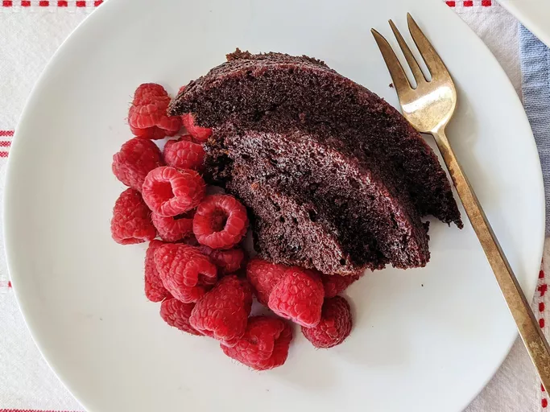

Vegan Chocolate Cake

Description:
Now that you've had your dinner, it's time for something fun! This is a recipe for a delicious vegan chocolate cake to totally stuff you if our other recipes didn't manage that already.
Ingredients:
- 360ml flour
- 240ml white sugar
- 60ml cocoa powder
- 1 tspn baking soda
- ½ tspn salt
- 240ml water
- 80ml vegetable oil
- 1 tspn vanilla extract
- 1 tspn distilled white vinegar
Steps:
Tip: Serve with berries for a refined touch.
- Preheat oven to 175 degrees C (350 F). Lightly grease a 9x5-inch loaf pan.
- Sift flour, sugar, cocoa, baking soda, and salt together in a large bowl.
- Add water, oil, vanilla, and vinegar. Mix together until smooth.
- Pour mixture into the prepared pan
- Bake in the oven for approx. 45 minutes. Test by inserting a toothpick or small knife into the center. If it comes out clean, the cake is done!
- Serve.
Home